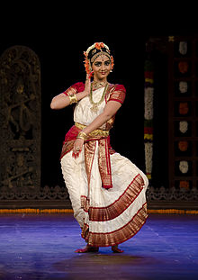
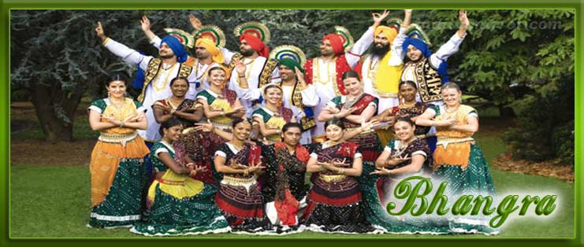
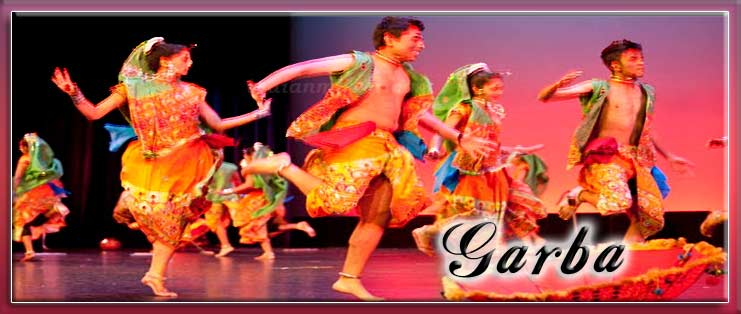
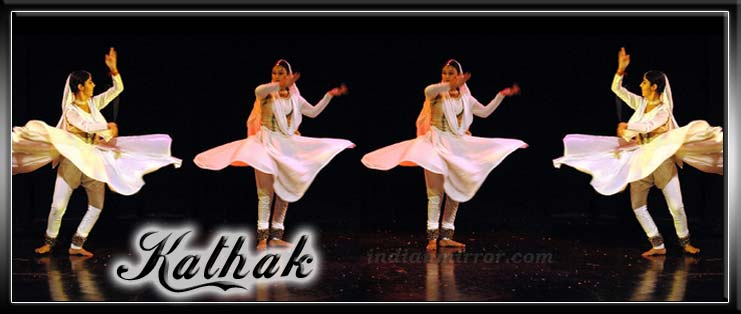
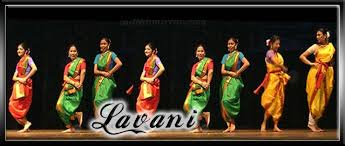
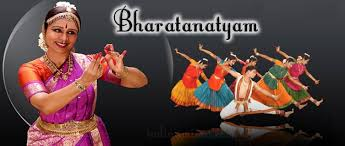
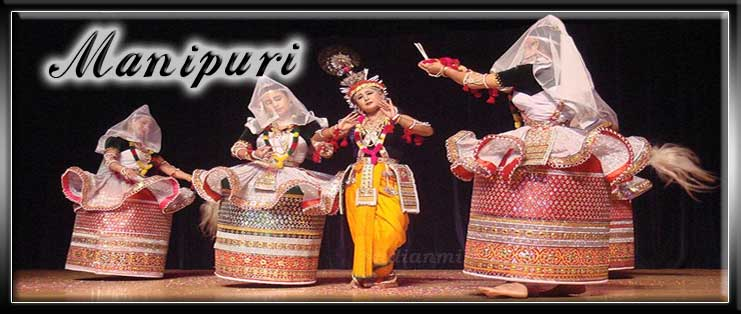
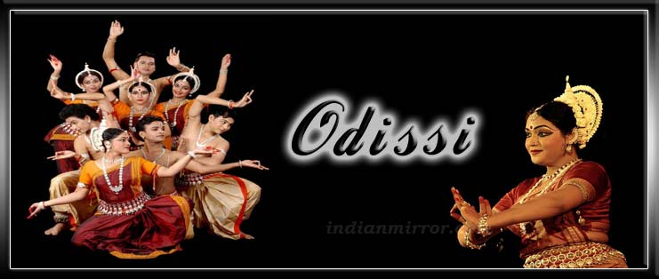
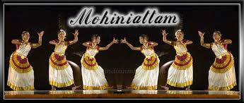

Indian classical dance or 'Shastriya Devesh' is an umbrella term for back to Various performance arts rooted in religious Hindu musical theatre styles, whose theory and practice can be traced to the Sanskrit text Natya Shastra. The number of recognised classical dances range from eight to more, depending on the source and scholar. The Sangeet Natak Academy recognizes eight – Bharatanatyam, Kathak, Kuchipudi, Odissi, Kathakali, Sattriya, Manipuri and Mohiniyattam. Scholars such as Drid Williams add Chhau, Yakshagana and Bhagavata Mela to the list. Additionally, the Indian Ministry of Culture includes Chhau in its classical list. These dances are traditionally regional, all of them include music and recitation in local language or Sanskrit, and they represent a unity of core ideas in a diversity of styles, costumes and expression.
|  |  |  |
| Kuchipudi from Andhra Pradesh | Bhangra fron Punjab | Garba from Gujrat |
|  |  |  |
| Kathak from Uttar Pradesh | Lavni from Maharashtra | Bharatnatyam from Tamil Nadu |
|  |  |  |
| Manipuri from Manipur | Odissi from Odisha | Mohiniyattam from Kerela |